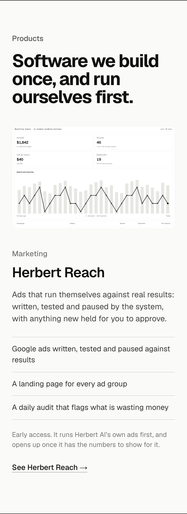
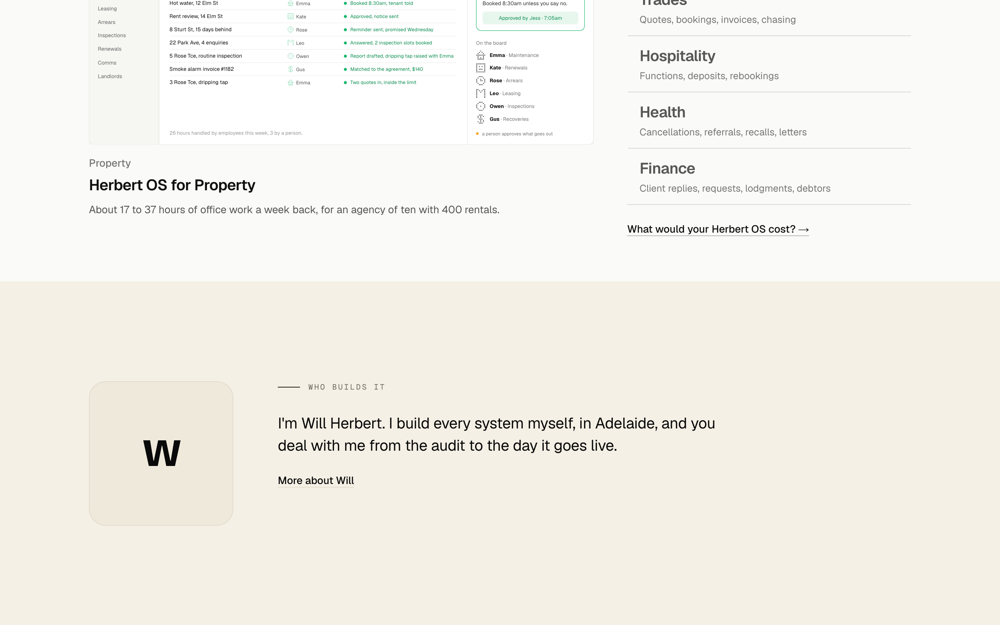
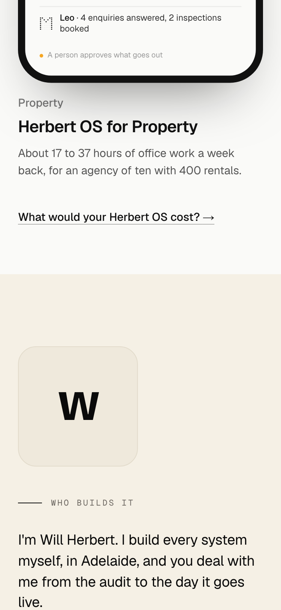
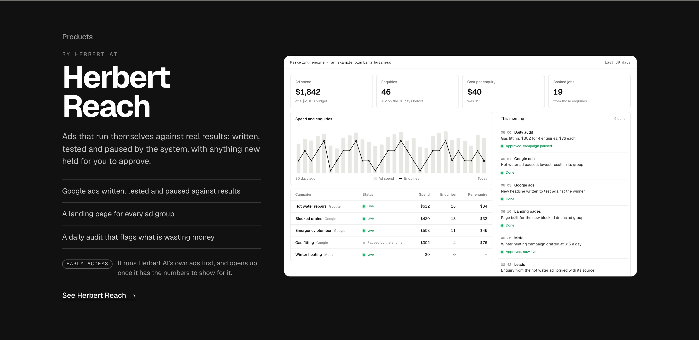
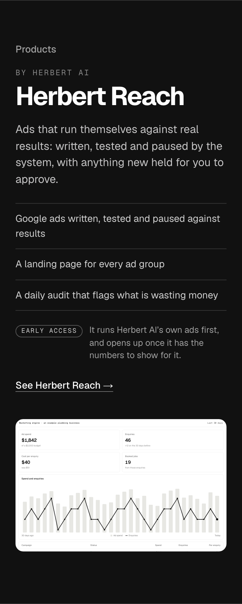
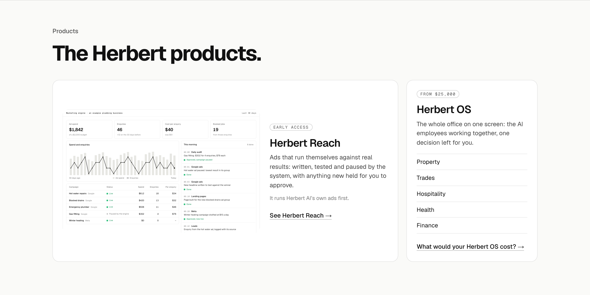
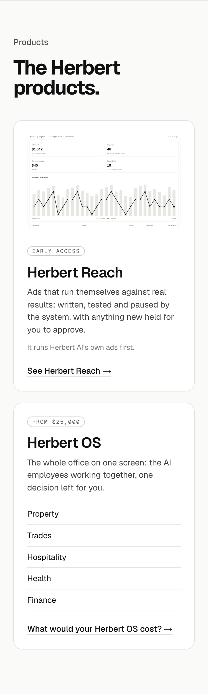

2. Screen and wordsThe site’s usual layout on paper, under “Software we build once, and run ourselves first.” Calm and consistent with Operating Systems above it; the product reads as one more section rather than a brand.


Homepage section 5, redrawn on the current page. Herbert AI is the company and its own software carries its own name: Herbert Reach (the marketing engine, placeholder name, early access while it runs Herbert AI’s own ads) and now Herbert OS. Each option at laptop width, with the phone beside it. The copy reuses the engine page’s lines and claims no results; no “example figures” labels.






